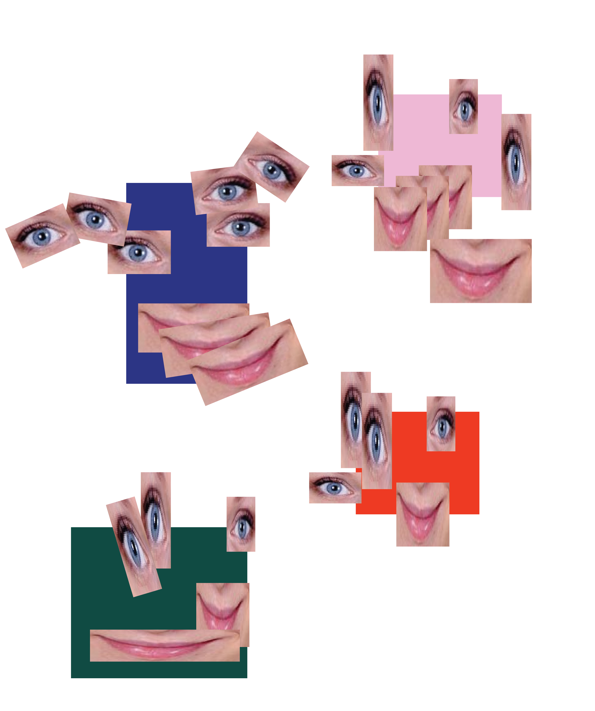
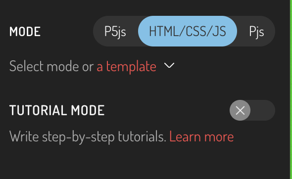
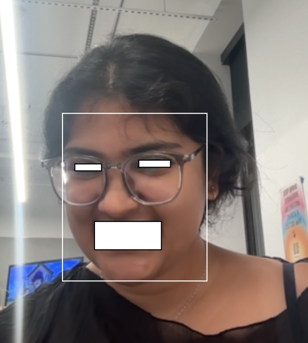

eyesnoselips
is a sketch for building a system of parameters (variables) which convey a range of emotion and feeling.
camera,
facial features,
computational portraiture
CC2026
2026
INTENT I love this assignment. After it was assigned yesterday, I went to Target and looked at my own face in the self-checkout security screens. I hate getting caught off guard like that, but it also made me realise how fun it would be to use our own faces in its maximum and minimum configuration. So, i wanna figure out how to use a camera to isolate eyes nose and lips to create a face!

THE PLAN!
Before I start, I'm trying to plan out what I would need to get this done.
1. get camera input working on p5
2. detect or isolate eyes, nose and lips (maybe using ml5, which is what i'm familiar with, but I've also heard
great things about mediapipe)
3. map each feature to variables (size of eyes? nose lips)?
4. use those variables to rebuild a face

let capture;
function setup() {
createCanvas(windowWidth, windowHeight);
capture = createCapture(VIDEO);
background(0);
}
function draw() {
//circle(mouseX, mouseY, 20);
image(capture, 0, 0, width, width * capture.height / capture.width);
}let capture;
let capture;
let faceMesh;
let options = { maxFaces: 1, refineLandmarks: false, flipped: false };
let faces = [];
async function setup() {
createCanvas(windowWidth, windowHeight);
capture = createCapture(VIDEO);
faceMesh = await ml5.faceMesh(options);
background(0);
capture.hide();
faceMesh.detectStart(capture, gotFaces);
}
function draw() {
//circle(mouseX, mouseY, 20);
image(capture, 0, 0, width, width * capture.height / capture.width);
//console.log("ml5 version:", ml5.version);
for (let i = 0; i < faces.length; i++) {
let face = faces[i];
for (let j = 0; j < face.keypoints.length; j++) {
let keypoint = face.keypoints[j];
fill(0, 255, 0);
noStroke();
circle(keypoint.x, keypoint.y, 5);
}
}
}
function gotFaces(results) {
// Save the output to the faces variable
faces = results;
}console.log(face.leftEye); and the right eye coordinates with
console.log(face.RIGHTEye);.
I didn't want to just copy-paste code, so I tried to get familiar with the syntax and understand what the values
meant.
I used the Google ML Kit FaceMesh reference too.
I also realised ml5 has a bounding box feature after looking through the ml5 reference.
console.log(face.leftEye);
console.log(face.RIGHTEye);
let capture;
let faceMesh;
let options = { maxFaces: 2, refineLandmarks: false, flipped: false };
let faces = [];
async function setup() {
createCanvas(600, 600);
capture = createCapture(VIDEO);
faceMesh = await ml5.faceMesh(options);
background(0);
capture.hide();
faceMesh.detectStart(capture, gotFaces);
}
function draw() {
//circle(mouseX, mouseY, 20);
background(0);
image(capture, 0, 0);
//console.log("ml5 version:", ml5.version);
for (let i = 0; i < faces.length; i++) {
let currentFace = faces[i];
// for (let j = 0; j < currentFace.leftEye.keypoints.length; j++) {
// let keypoint = currentFace.leftEye.keypoints[j];
// fill(0, 255, 0);
// noStroke();
// circle(keypoint.x, keypoint.y, 5);
// }
// for (let j = 0; j < currentFace.rightEye.keypoints.length; j++) {
// let keypoint = currentFace.rightEye.keypoints[j];
// fill(0, 255, 0);
// noStroke();
// circle(keypoint.x, keypoint.y, 5);
// }
push();
noFill();
stroke(255);
rect(
currentFace.faceOval.x,
currentFace.faceOval.y,
currentFace.faceOval.width,
currentFace.faceOval.height
);
pop();
rect(currentFace.lips.x, currentFace.lips.y, currentFace.lips.width, currentFace.lips.height);
rect(currentFace.leftEye.x, currentFace.leftEye.y, currentFace.leftEye.width, currentFace.leftEye.height);
rect(currentFace.rightEye.x, currentFace.rightEye.y, currentFace.rightEye.width, currentFace.rightEye.height);
//rect(currentFace.nose.x, currentFace.nose.y, currentFace.nose.width, currentFace.nose.height);
// for (let j = 0; j < currentFace.upperLipTop.keypoints.length; j++) {
// let keypoint = currentFace.upperLipTop.keypoints[j];
// fill(0, 255, 0);
// noStroke();
// circle(keypoint.x, keypoint.y, 5);
// }
}
}
function gotFaces(results) {
// Save the output to the faces variable
faces = results;
}mask.background(0) was the issue.
let capture;
let faceMesh;
let options = { maxFaces: 2, refineLandmarks: false, flipped: false };
let faces = [];
let mask;
async function setup() {
createCanvas(600, 600);
capture = createCapture(VIDEO);
capture.size(600, 600);
capture.hide();
faceMesh = await ml5.faceMesh(options);
background(0);
faceMesh.detectStart(capture, gotFaces);
mask = createGraphics(600, 600);
// imageMode(CENTER);
}
function draw() {
//mask.background(0);
//circle(mouseX, mouseY, 20);
background(0);
//image(capture, 0, 0);
mask.fill(255);
mask.noStroke();
//detectEyesNoseLips
//console.log("ml5 version:", ml5.version);
for (let i = 0; i < faces.length; i++) {
let currentFace = faces[i];
// for (let j = 0; j < currentFace.leftEye.keypoints.length; j++) {
// let keypoint = currentFace.leftEye.keypoints[j];
// fill(0, 255, 0);
// noStroke();
// circle(keypoint.x, keypoint.y, 5);
// }
// for (let j = 0; j < currentFace.rightEye.keypoints.length; j++) {
// let keypoint = currentFace.rightEye.keypoints[j];
// fill(0, 255, 0);
// noStroke();
// circle(keypoint.x, keypoint.y, 5);
// }
// mask.push();
// mask.noFill();
// mask.stroke(255);
// mask.rect(currentFace.faceOval.x, currentFace.faceOval.y, currentFace.faceOval.width, currentFace.faceOval.height);
// mask.pop();
mask.rect(currentFace.lips.x, currentFace.lips.y, currentFace.lips.width, currentFace.lips.height);
mask.rect(currentFace.leftEye.x, currentFace.leftEye.y, currentFace.leftEye.width, currentFace.leftEye.height);
mask.rect(currentFace.rightEye.x, currentFace.rightEye.y, currentFace.rightEye.width, currentFace.rightEye.height);
//rect(currentFace.nose.x, currentFace.nose.y, currentFace.nose.width, currentFace.nose.height);
// for (let j = 0; j < currentFace.upperLipTop.keypoints.length; j++) {
// let keypoint = currentFace.upperLipTop.keypoints[j];
// fill(0, 255, 0);
// noStroke();
// circle(keypoint.x, keypoint.y, 5);
// }
}
let frame = capture.get();
frame.mask(mask);
image(frame, 0, 0);
//capture.mask(mask);
}
function gotFaces(results) {
// Save the output to the faces variable
faces = results;
}functionditi@gmail.com
© Aditi Neti 2026